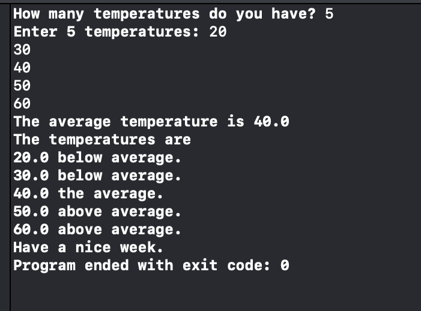

Swift
import Foundation
print("How many temperatures do you have? ", terminator: "")
if let size = readLine(){
if let size = Int(size){
// Create variables for the array, sum, and average
var temperature:[Double] = []
var sum: Double = 0.0
var average: Double = 0.0
// Read temperatures
print("Enter \(size) temperatures: ", terminator: "")
for i in 1...size{
if let temperatures = readLine(){
if let temperatures = Double(temperatures){
temperature.append(temperatures)
}
}
}
// Compute temperature average & sum
for temperatures in temperature{
sum += temperatures
average = sum/Double(temperature.count)
}
print("The average temperature is \(average)")
// Display each temperature and its relation to the average:
print("The temperatures are")
for temperatures in temperature{
if(temperatures < average){
print("\(temperatures) below average.")
}
else if(temperatures > average){
print("\(temperatures) above average.")
}
else{
//temperature[index] == average
print("\(temperatures) the average.")
}
}
print("Have a nice week.")
}
}
Output
